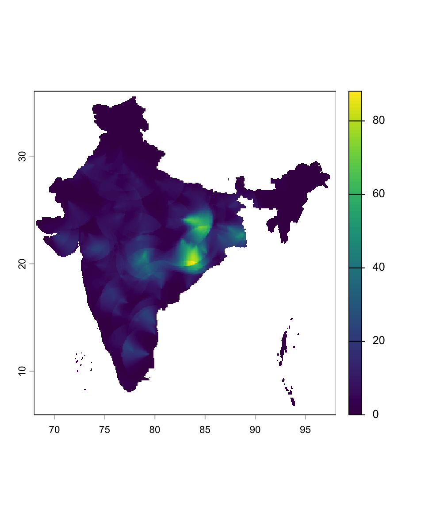

The contents of this post fall squarely within the category of things I’d forget if I didn’t write them down. Recently I found myself in a bit of a pickle. I was computing 144 months worth of exposure to pollution from coal-fired power plants for every single 10 square-km pixel over land in India.
This can be done rather painlessly in R using the sf (simple features) and terra packages. Still, with the amounts of data being processed, storage and RAM can run low. I took care not to load big chunks of data at once to address the storage bottle neck, and heavily relied on terra functions that run C++ under the hood to save RAM. Soon I had pretty maps of monthly coal pollution exposure like this one for March 2020.

Curiously, though, I could only run the script exactly once before it filled up all the free space left on my 250GB SSD. I had assumed that temporary files are forgotten as a result of the fabulously named gc (garbage collect) command. Not so. Then, surely, if I were to close my current R session temporarrrrry files would be unlinked…right? Again, no. The only way I knew of to free up the drive and make my computer - never mind R at this point - functional again was every tech support service worker’s favourite word: restart.
Thankfully, after a bit of digging, I learned a better way to do this from within an active R session, thus leading us to the code snippet that ends this rant.
old <- list.files(
tempdir(), full.names = TRUE)
length(old) # inspect count
# delete after inspection:
unlink(old, recursive = TRUE)
gc() # finally, garbage collect (not strictly necessary)